Archives : 2010-09
DRESS BLOG @ Sep 29, 2010
@9/27
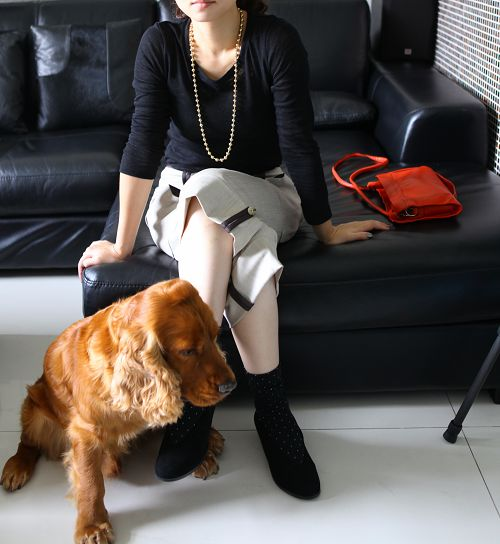
@9/28

@9/29
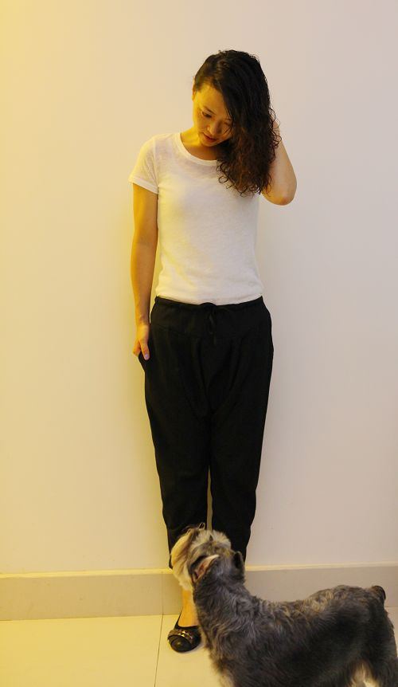
第一次烙饼 @ Sep 29, 2010
对于一个爱吃各种面饼的人，自己烙饼的愿望早已埋入心中。在看了龙竞的韭菜饼与问问的灌蛋饼之后，想要实现该愿望便愈发的迫切。
今日下班早，回家取出早已购回的面粉，揉面。开始比较稀，不断加入面粉，一个小面团渐渐变成一个大面团，起初用木勺子拌面，接着直接用手进去揉，揉面真不是件轻松活。揉好后，心中铭记龙竞写的“十分钟醒面”，这十分钟用来搅拌5只鸡蛋。
按照想象中将面揪成一小块一小块，揉成球状，用老妈给的擀面杖擀面，面团不是粘住擀面杖，就是拉扯着切菜板，怎么能分离面与其他物体呢？于是，沾了菜油来擀面，效果照旧。不得已，打电话求助老妈，电话那头传来老妈“哈哈哈”爽朗的笑声，“你得撒点面粉。。。”果然效果很好。我擀啊擀啊擀啊，脑海里想着问问擀出的椭圆型，可实际擀出的摸样完全是多边型的。。。
总算熬到下锅了，如何也无法把鸡蛋灌进饼的夹层中去？我...我...我只好自由发挥成洒在饼的表层，这也算鸡蛋饼吧？！
顾不得红豆稀饭，先来一口饼尝尝，不知不觉中吞下两块死面饼，把自己给腻住了。我揉着胃，泡了一杯凤凰单枞来剐油。。。希望今夜不要被面饼给搅了睡眠。
没想到，看起来简单的烙饼，做起来如此麻烦。处女饼的经历实属狼狈不堪，我被这个经历小小的打击了。

DRESS BLOG @ Sep 25, 2010
中秋节期间，白岩松在南京签名售书：《你幸福了吗？》
10年前他出过一本《痛并快乐着》，那时他30岁。
10年后40岁的他问自己：你幸福了吗？
30~40岁之间，人生中转型、思考、成熟的重要阶段。
当你越走越远，忘记了出发时的初衷是什么？
你能感受到平和、幸福吗？
我很享受32岁之后的自己，不过...
还是想把这个问题留给将来40岁的自己。
++++++++++++++++++++++++++++++++++++++++++++
有人说：逻辑上来讲，如果你现在感到幸福，用不着等待到40岁。
恩，今天我化了妆，心情不错。毕竟休息了三天，身体貌似也恢复了。细想想，大多数时候感到挺幸福的，至少不上班的时候，内心安宁平静，很享受家庭生活。上班时的状况却很糟糕，常常烦躁、易怒、纠结、疲劳、分内泌失调。
上班下班，上班下班，好与坏不断交错穿插，白天被糟蹋，晚上回家调整，构成了目前的现状。（怀疑自己是不是神经太纤细了？）如果两者可以分离感受的的话，在家幸福，上班不幸福。这，算幸福还是不幸福呢？
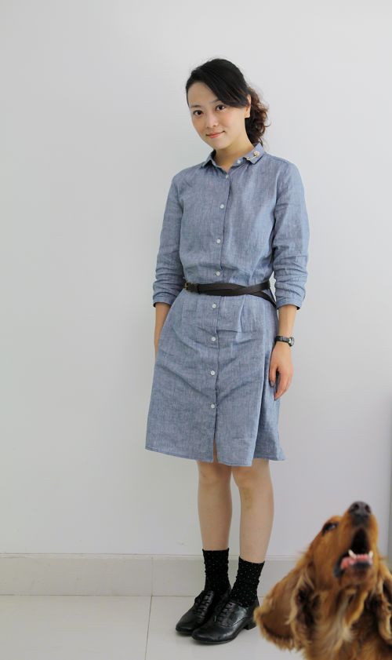

假期 @ Sep 25, 2010
假期看了许多电影，印象最深的是《Letters to Juliet 》，由近期非常喜爱的女演员Amanda Seyfried主演。
“罗密欧与朱丽叶”的虚构戏剧上演后，意大利博物馆馆长比较有生意头脑，在30年代按照故事描述仿制了一座朱丽叶居住的房子。人们真的前往意大利朱丽叶住处缅怀，甚至有人贴些手写的文字给她。博物馆馆长当年亲自回信给贴纸条的游客们，署名“朱丽叶的秘书。如今世界各地仍然有慕名而来的女性们，她们将自己的苦恼困惑书写在纸上，朱丽叶的秘书们每天收集起来，一一回复并邮寄回每位游客留下的地址，电影里的这一情形完全来自于现实。基于这么一个背景，女主角发现墙壁中一封写自50年前的信，就是图片中这位银发夫人在她15岁时所写，故事套故事。虽然imdb只给这部电影6.3分的总评，但是因为有Amanda Seyfried，这位天生的尤物还是让人眼睛不够用呐。除了故事之外，令人惊叹的意大利风景、庄园、小镇、古老的石板路，以及FIAT汽车也很吸引人。

另一部具有讽刺意义的电影《THE EXPERIMENT》，也是由我喜爱的男演员Adrien Brody主演。《The Experiment》改编自2001年德国电影《Das Experiment》，讲述人类行为学实验招募了一群普通人作研究，一组扮囚犯，一组扮狱警，实验的目的是想看看在角色、权利分配后，会对人产生怎样的影响。里面Forest Whitaker扮演的角色，在分得权力后暴露出的本性，与现实中的某些人极其一致。Whitaker那角色平时循规蹈矩老实本份，还是虔诚的基督徒…
豆瓣里有关这部电影的最佳评论，我很认同，摘抄一段：如果把你放回“文革”时期，你会怎么做？还记得张丰毅张国荣演的《霸王别姬》最后霸王是怎么对姬的么？
看完本片和津巴多的实验以后，不要单纯惊讶于对人性的失望。实际上津巴多解释这一切发生的原因是：如果你在没有监督的情况下给人以权利，那就是在给滥用开通行证。他们明明了解后果，却任其发生。也就是路西法效应。
英雄主义是恶的解药。津巴多在TED的演讲也说，任何时候不要害怕自己作为“异类”，英雄也是平凡人，只是平凡人做了英雄之事。而英雄行为是不平凡的。要做一个英雄有两个条件：一、你要在人们冷漠之时不袖手旁观；二、你要以社会为中心而不是自我为中心。
有一天每个人都会遇到这种情景，这时人们有三条路可以走：1、你服从权威力量，而成为恶人；2、你冷漠袖手旁观，而内疚一辈子；3、你成为一个英雄。每个人在面对时只有一次选择的机会。
不过，我想说Adrien Brody主演的角色表现出的行为，初衷并不是想做英雄，而的的确确是受到正义与人性中善的驱使。
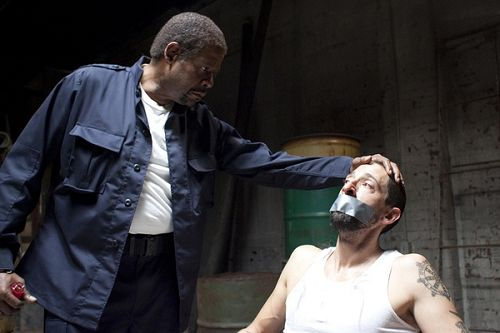
++++++++++++++++++++++++++++++++++++++++++++++++++++
@9/22 中秋家庭聚餐中
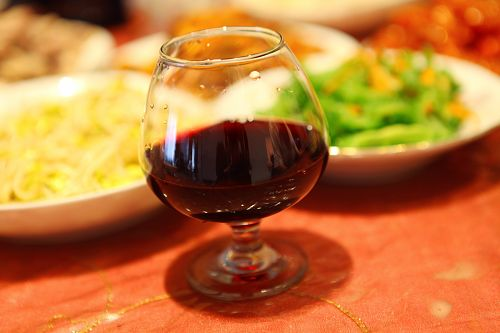

@9/23
即使假期，到点儿就醒了，在闹钟响起之前。天气凉爽起来，能让人感觉到秋季的到来，我在阳台上浇花，抬头望见蓝色的天空和白色的云朵。这是大雨过后的天空，大自然显露本来的颜色，对于居住在南京的人来讲，还是挺珍贵的。


吃得过瘾。 @ Sep 18, 2010
“曲折”放假时间表终于开始了，星期六休息一天，接着工作三天，然后休息三天，之后继续工作到国庆节前。上午和同事外出办事，回家也早。于是为家中植物修剪发型，阳台立刻清爽了许多。午餐又一次去了“品尚豆捞”，因为好喜爱它的就餐环境和美食。它位于地铁大厦对面的龙世大厦三楼，去年曾在那里吃过磨石泡泡鱼火锅，如今被“品尚”替代。
什么时候女友们聚餐，可以去这里一试，各有各的小火锅，卫生，口味各取所需。环境也不错，不用扯着嗓门喊话，好象吃完后也没把餐厅里的火锅味带回家：P
南京地铁大厦，据说全部是钢铁结构，从未进去参观过，不知隔音效果可好？

午餐时间，客人并不很多。餐厅里有两棵好看的人造银杏树，沙发座很有安全感，对于一个重口味常常光顾火锅店的人来讲，相比之下这样的环境让人更舒服。火锅好象不能登上大雅之堂？谁谁谁请客，会选择去火锅店吗？如果是这样的火锅店，倒可以考虑请爱火锅的客人去。
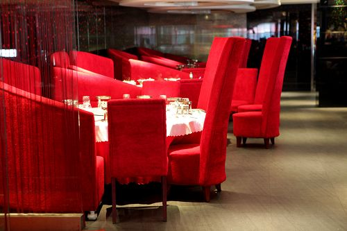
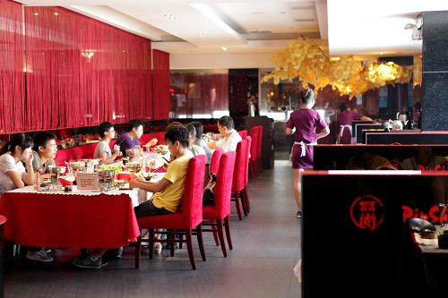
各种蘑菇是我喜爱的蔬菜系列之一。

钻石羔羊肋卷。钻石.....想来是从口感差异起的名字，因为...

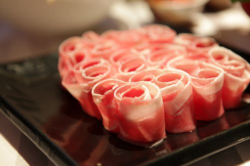
因为前一晚我们5个人点了4盘“极品羔羊肉”，切工了得，薄薄的，但吃起来一点不绵，即使细微的弹性也足以说明它有别于其他品名的羊肉，且毫无膻味儿，不过这不适合“膻味儿”的粉丝们。

至尊雪花肥牛，烧熟后相对比较厚。

隆重推荐“日式4A黑毛和牛肉”，与上面的肥牛相比，咀嚼起来能感到弹性，每一片的两边都带点儿肥，很嫩的口感。

如果不是请客的话，可以单点蔬菜，最爱里面的唐蒿菜和菠菜。

鲈鱼......恩.....没有我从菜场直接买回家烹饪的好吃，可能是事先准备好的，新鲜劲儿没了。
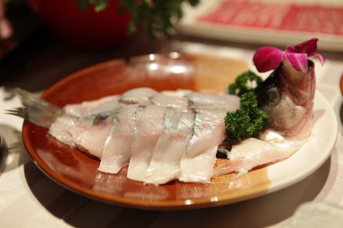
有很多种底锅可供选择，询问了所有底锅即使是麻辣型的也不辣。最爱“炫一色”底锅，里面放了小青椒圈和小香葱，既清新又开味。餐厅新推出的底锅。
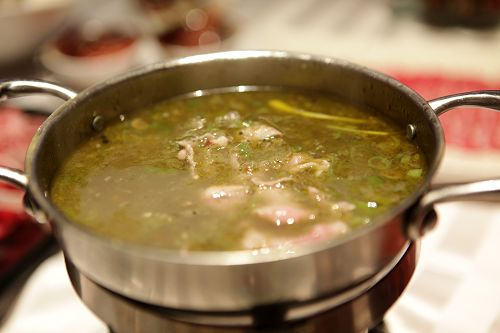
调配料在自助区自取，十多种，让人眼花缭乱。好些火锅店都会备有芝麻酱，到目前我还没体会到该调料的美好，所以几乎从来不会主动点芝麻酱。
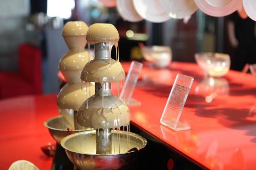
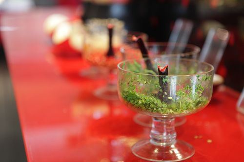
自助区上方吊着许多让人看了大发食欲的果蔬拼盘的装饰。

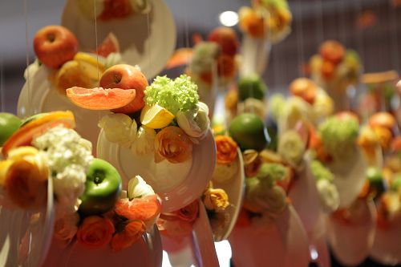
南京的澳门豆捞与澳门豆佬并不是同一家连锁，王府大街的澳门豆佬是独门经营，而九华山、操场门和江宁的澳门豆捞是连锁店，我更偏爱澳门豆捞。
体验过许多火锅，以及各个餐馆的调料，最爱“澳门豆佬”各种“滑”，品尚的“滑”还是差了些。以及它家的配料，很简单，小红圈辣椒+餐厅特制酱油，即可实现美味无限。所以，在品尚，便借鉴了这种搭配，并加了少许的醋和香葱，这种迷你身材的香葱是不是只有南方才有？
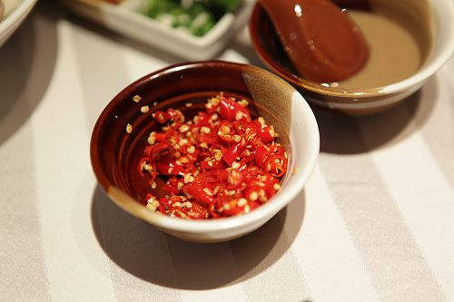

None @ Sep 16, 2010
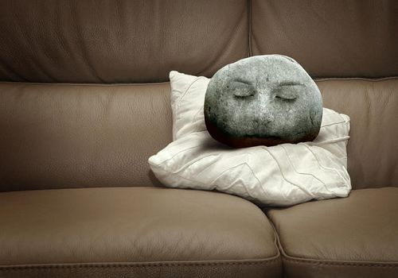
一个决定就能一了百了了？人性的复杂，永无止境反反复复，被复杂的东西牵绊着。和女友煲电话粥：太追求完美。说得难听点，就是什么都想要，贪婪的本性。不过世上有几人事事顺心？即使事事顺心，还会被周期性荷尔蒙影响时常发作一阵儿。
特别敬佩某些个铁了心过这样、那样生活的人。一个猛子扎进水里，享受也好，呛水也罢，就悬浮在里面了。即使有被淹死的风险也认了。
某些个走着走着失了方向感的人，不管这路走得多么正派体面，仍然存有无法解答的疑问。回头望，这是一条怎样的路？远方又是什么在等待？
那些个小心翼翼躲过世俗标准，分裂精神与生活，是不是会更满足呢？如果满足，是满足于伪生活还是真感受？两者兼顾？还是转换角色、表情，以及谎言。
“你想要什么？”
“想要美食与欢笑，以及不要反复纠缠在同一个问题上。”
每个人都需要一个出口。 @ Sep 16, 2010
昨晚睡前看了2009年美国动画片《Up》，心情好到现在。我已经很少去电影院看电影了，上一次去电影院是为了看《Avatar》，应该是去年下半年的时候，结果河西那个双机3D效果也不咋滴。因为常常在家看片，国外电影上映3个月后，国内的D9版本DVD才会出来，所以我是看电影滞后者。回到《UP》上，故事的想象力真是了得，每个人物都可爱，电影的制作班底专门前往南美洲做实地调查，恩，对，看碟子的另一个原因是可以看到制作花絮等电影背后的介绍。《UP》里的每个角色都有属于自己的梦想，包括那只叫Dug的可卡，它想找到一位喜欢的主人。我很喜欢Dug，喜怒哀乐和我家Luke一样一样的，表情也相似。
《UP》动画导演和三位主角

Dug通过项圈上的电子装置可以说人话，呵呵~看完电影我在想，如果能有《UP》里人物的玩具，我倒想买些回来，每位角色创造的都很有喜感。到http://www.ourtoys.cn/里去寻一寻。
说到Luke，今早的情形有意思。我家主卧做了8MM的钢化玻璃门和墙，玻璃很结实，昨天挂门的铰链断了，因为门太重，门被搬移到别处。
今早Luke慢悠悠摇着尾巴从餐厅爬上楼，我在主卧卫生间洗漱，它对着原先门缝处哼哼唧唧想进来，一会儿站一会儿坐，等在门外。我拽着它的长耳朵把它拉进来。待我离开，又见它在门内等，一会儿站一会儿坐，抬起一只前爪去推不存在的门。。。哈哈哈哈。。。惯性思维，对吗？
电影表达了每个人都需要一个梦想，经历千辛万苦去感受心中的梦想，无论面对的是不是残酷，都值得一试。而Luke的反应告诉我，不要进行自我封闭，或许前面的那扇门不过是自己想象出来的，我只需要寻找一个出口，就这么简单。
国外有人以《UP》电影为主题拍摄的婚纱照，哦，那首钢琴曲伴随男女主角从相识到相爱到一起变老的画面，让人无法不动心。这组结婚照拍的清新自然又轻松，请注意男士西装领上别的那只苏打水的瓶盖，和动画片里的一模一样啊。
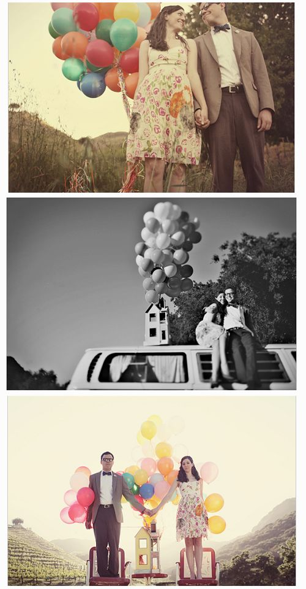
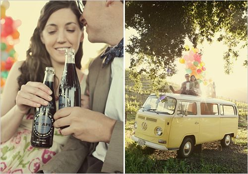
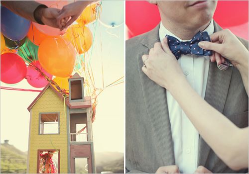

无私就是最大的私 @ Sep 14, 2010
9月14日消息，对于中国富豪们热议的“裸捐”话题，阿里巴巴集团创始人马云，上周末在一个公开演讲中发表了自己的看法，他表示：财产一点不留给孩子和全留给孩子都是不负责任的，并认为“不考虑自己的人，不要相信他会考虑社会”，“无私就是最大的私”。
就上述观点，香港的闾丘露薇：所谓慈善，要对身边的人好，对员工好，然后有余力，再回馈社会，做不好前面，跳到最后，总是无法让人相信是“无私”。
这微醺的下午。 @ Sep 13, 2010
星期六几乎成了每个周末的外出日。为了偷懒，摘抄众JM的微博，从不同角度感受那个微醺的下午，也好。
龙竞：昨午后携闺女在REA与小原子、树娃、问问她们扎堆儿，后来茶和扑土也来了。姑娘们都很耐斯，也很亲密，我光是坐着听她们唠磕儿就觉得有意思极了。小满和我一直磨蹭到好晚才回家。小满在回家的的士上睡着了。本次还近距离欣赏到了茶生缝的包包，用料之考究手工之精细让人汗颜。
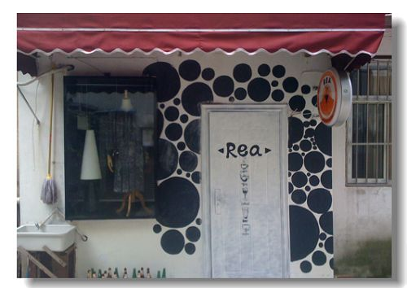
陈问问：今天呆掌柜的二楼小空间，幽暗光下试了T2。对焦了戚风的笑脸、小满的鼻子，龙竞的眉梢，茶的长卷发，小草帽里的白展堂，PUTOOO的醉脸，乡村花布小包裹……纷纷都是美物。但是我很忐忑，不知道成像效果如何。我对新机器的弱光拍摄，心存担忧，好在美好时刻，也不是非要靠相机来记录。

tecinese：今天喝到putoo用玫瑰红葡萄自酿的葡萄酒，更爱不加冰的口感，甜中带着让人微醺的劲儿。扑土喝着喝着脸就红了，人也散了，醉了一般。之前看她和龙竞制作葡萄酒的过程，很有意思，还是自己酿的酒好，不是外面用葡萄浓缩汁勾兑出的涩口的感觉。爱，很爱，大爱，我要学习酿葡萄酒！
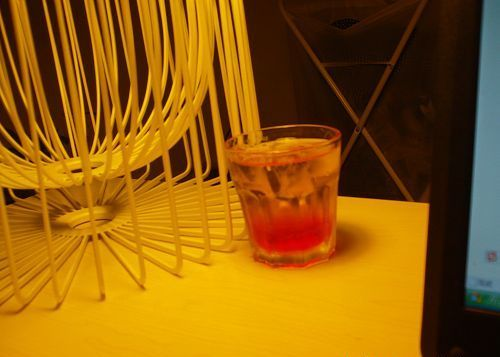
putoo:上午过滤葡萄，明白粒粒皆辛苦。大概是80、90年代往后，大家都开始在饮用外面的饮料、泡菜、包子，现在觉得，我们贪图便利的同时，给无良商人制造了机会，现在自己养奶牛挤奶给小孩喝已经不可能，以后糟糕的环境更无望~ 。是不是买到了便利，就赔上了乐趣和健康？弄了两坛，一大一小，小的在店里，那地方暖和（你们知道~）便早早发酵。大的在家，放在卧室里，有空调恒温慢酿，今天液体开始出现红色，天天都晃动一下，放点气，酒香已经出来点儿咯~我琢磨再去搞一坛子继续酿。。 哦，对了，我开始研究酿啤酒了。。。

shuwua：龙竞是个巧人儿，今天带小满来阿呆店里玩。她用好看的深粉紫布裹了个包袱，里面是丹麦曲奇饼干桶罩下的戚风蛋糕，一来就把我美呆了。盘子是多年前在沃尔玛买的，英国博物系的，喜欢极了。小满从网络来到眼前，小女王，嗲啊，可爱啊，不足以形容。与一旁大嚼肉食的我们相比，她是小清新 。

阿呆掌柜的宠物“白展堂”，瘦骨嶙峋，脖子上不知被哪位好心的MM戴上根与它体型不符的颈链。。。它与皮蛋打架的样子也很搞笑，我家土豆不愧是成熟滴的长辈，闻闻它就走开了，端坐在我们中间，又安静又幸福的样子。

真的很想说，很爱这样边喝酒边聊天边吃东西，席地而坐的下午啊~
冷水慢火煮青蛙 @ Sep 13, 2010
好的企业会提供给员工一块理想的土壤，让其在此生根发芽，茁壮成长。如果你在20、30年后还是今天的状况，并且现在便深知此事，失去理想，失去希望，你还会继续走下去吗？所以我为提出辞职的同事感到由衷的高兴。
在工作中我会忠实于被优秀的人领导，反之，除了表面的礼貌，更多的则是思考。有人因此改变世界观、价值观，遁入世俗的轮回，有人偏偏要奋起抗衡。用来消磨的人生一定很长，用来实现自身价值，时间却往往不够用。
听好友描述她的事业蓝图，出现莫名的压迫感。仿佛被世界遗弃，连表达都感到虚弱。闭上眼可以舒适的活着，但仅仅是活着，而已。好友说：“你们那是在用冷水慢火煮青蛙。”
沈纹-I am still here @ Sep 10, 2010
从反向连接里发现她，对常常来访问“中国茶”的人心存好奇。因此，得到了她的BLOG地址，也时常去看看。那里安静，没有嘈杂声，文字静谧地躺在页面上，舒服的象一首摇篮曲。
上个月买了《独唱团》，作者那页的右下方出现一位写着沈纹的女子的照片，当即联想到我时常看的“I am still here”，她们是一个人吗？之后，得到了她的证实，她就是《独唱团》里的沈纹。
有人买了《独唱团》，不是因为韩寒，是因为沈纹，他这样写道：“《这个夏天你去不了》与大多数读者的印象一样，这篇文字是典型的余华风格。死亡。成长。孤独。内在的暴力。这些因素无一例外的出现在沈纹的文本中。这源于十多年前，在江北某个师范学校里的阅读经历。
那时候，余华的拥护者并不只是她一个，就像她的崇拜者并不只有我一个一样。那所师范里有位汪姓文学评论家，学文的中师生们都慕名报考该校的文科班，因为汪老师任教文艺理论课。
沈纹来了。纯净，内敛。汪老师说：“沈纹有着一般学生所没有的大气。”汪老师是评论作家作品的，一般作家他都看不上眼，难得会对学生有如此高的评价。
于是我们都开始仰视这个曾在师范校刊上发过作品专辑的同学。然而，沈同学有种常人难以亲近的气场。她不停地读。她不停地写。也许是读书笔记。也许是写作随笔。她的全部生活好像就是文字。”
恩，更新BLOG的时候，我们不可避免考虑到对面的观者，象她这样安静地在blog里默默地书写，这样的人越来越少了。不在乎人气，不在意有多少粉丝，不投其所好，不哗众取宠，把玩构建文字的乐趣，享受自我世界。如今的文学圈、媒体人就是一标准的娱乐界，把自己当成一桩生意去炒作去经营，假清高假风雅假文艺。。。比比皆是，把观众当傻子，岂不知连傻子看着都闹心？！省省吧，洗洗睡啦。
昨晚女友们讨论“什么是酷？”认同shuwua的观点：“酷，就是不被世俗标准束缚，不在意别人如何看自己。”那是骨子里的东西，不是矫情做作的产物。仅凭这一点，就可以打动我。读她的blog时，某种感受缓慢充溢着胸腔，或许是满足或许是忧伤或许是一场有关共鸣的对话。
管什么不管什么管什么不管什么 @ Sep 09, 2010
通行证找不到了，重新办理起来比获得国外签证的时间还长，NND。大清早的，市区到处都是人和车，行人的脸上挂满焦虑与茫然，灰蒙蒙的城市，我的眼睛也直了。
实在不明白，为什么证件照非得有领子，不能戴首饰，以及刘海连眉毛都不能盖上，脸泛油光得去扑层粉。忽然邪恶地想：戴一假领子，下面着比基尼。估计人家不会管，人家只管看得到的部位。这和许多部门的行事方式非常一致。06年办的驾照公证，今天找到了，16开A4纸那么大，这么大方便携带吗？这些部门如果稍微动动脑子，俺们得省多少事。
看到去南极的价格昂贵的让人想去死，那个“只属于少数人一生荣耀”的标题也想让人去死。乌斯怀亚，一个6万人居住的城市，在地球的最南端。那个谁，金城武去过，曾经看过他在南极拍的照片。是不是这辈子我都不可能去南极了？还有美国60号公路，这里有人熟知吗？这条公路已经从地图上消失，旅行仍然延着原有的60号公路进行，自驾方式。吸引力强大，先记录，再抹把口水。澳洲的朋友打电话来。。。我想说圣诞节的澳洲很热很热啊。。。俺们下午继续努力工作。
空气和颜色都很美，可惜不在俺们生活的城市。我有一件同款的连体长袖衣裤，黑色的。没有干净的空气衬托，什么颜色都不好看。
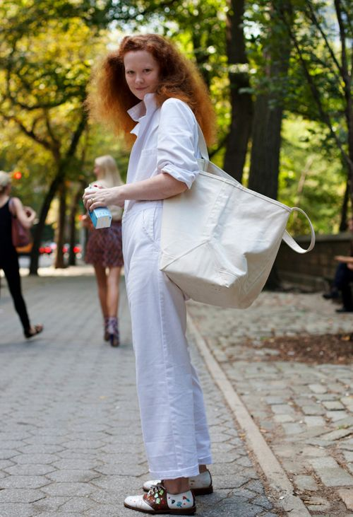
DRESS BLOG @ Sep 08, 2010
超爱这身搭配，藏青色裤子、领结，黑色高邦高跟鞋，低调又大方。
藏青色也属我的色系。

还有两天便能完成一周的黑色dress blog，后面两天是否还有黑色衣服？让一个热爱黑色衣服的人也有些茫然。derss blog完全看心情，或许这周心情还不错吧。娱乐自己的成分更多些，对于观者我还没到要承担某些义务的程度。衣饰搭配除了考虑到工作环境等因素外，还有审美的因素，请注意是“自己的”，不是他人希望的。当然欢迎善意的有关衣饰的讨论，而不是有关我的讨论。
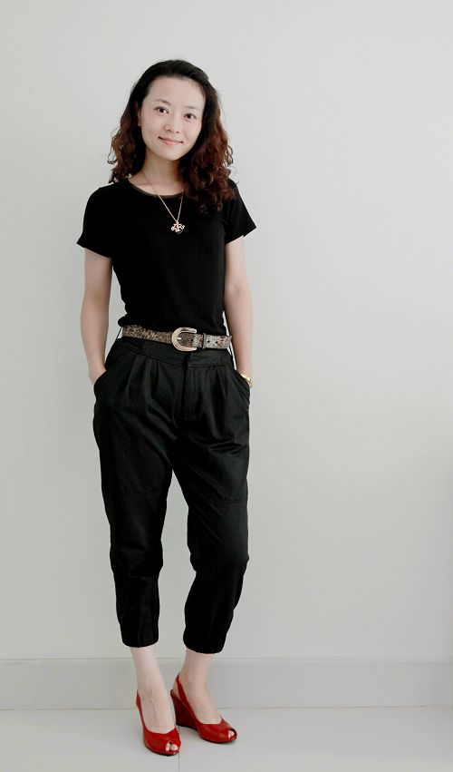
DRESS BLOG @ Sep 07, 2010
拖在脚面上的素色长裙，搭配中性西服外套，很喜欢。
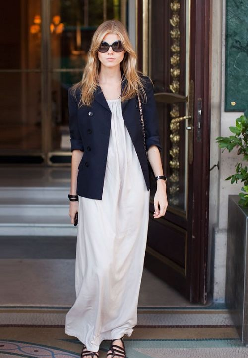
黑色，黑色，还是黑色，搭配一点点金色。
所有衣服和鞋都是旧物，不同搭配下换了种心情。

DRESS BLOG @ Sep 06, 2010
周末和阿呆谈到如今大街上太多铆钉服、罗马鞋的搭配，年纪轻点儿的MM们手腕上戴着或珍珠或金属或皮质的手链/手镯，老多老多的堆积在手腕上，跟风很快，却缺少自己的气质和感觉，千篇一律会令人审美疲劳。所以这样的女孩子会让人眼前一亮，她身上牛仔裙的淡蓝色真好看，配上童花头发型，十分可爱，可惜鞋子搭配的不好。
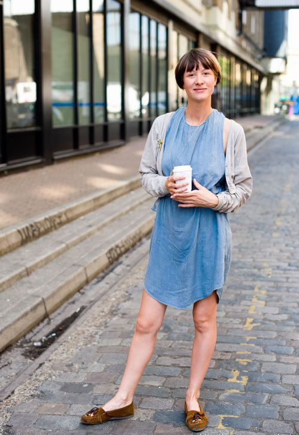
一如既往喜欢的黑色。

一场美食，一场旅行。 @ Sep 04, 2010
想吃日本料理，可以在丁丁网上搜到一堆信息，传说中的多佐餐厅，打了几个电话过去没人接，最后保守地选择在中央饭店一楼的浩之源，价格涨了！！！是不是最正宗的日本料理店在古南都饭店？（叹气）南京的餐饮界被川菜霸占了半壁江山。


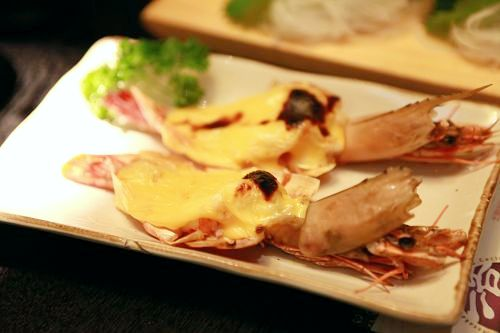

邻居尼日利亚人周五晚上举办PARTY，被邀请加入。中国人的聚会一般以吃为主，所以我是冲着尼日利亚美食去的。自助餐形式，他们的牛奶酒喝起来不错哦。这份类似米粉状的食物据说不是米粉做的，具体是什么他们无法说得清楚，和米粉的制作过程一样，先要研磨成粉状再进行烹饪。左边食物微辣，细碎的象磨碎了的豆腐，但不是豆腐，掺杂着细碎的蔬菜颗粒。传统的尼日利亚方式是用手抓着吃的。

番茄加辣椒做的汤。

炸鸡腿，炸鸡肉....可以被称之为国际化食品了。
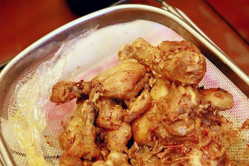
聚会上究竟来了多少人，没数得过来，来的人很多。有在房间里打游戏的，有听歌的，有聊天的，有跳舞的，有看电视的。。。聚会中的人们并不都相互熟识，比较闷的人在这种场合里可能会比较郁闷，看着也让人感到无趣吧？有个中国女孩儿从进门坐在沙发上到离开就没起身走动过，几乎一直坐着一言不发。我们好心地找她讲了几句，她是朋友的朋友，而她的朋友没有来，一张口满嘴地道的南京话。

信奉基督教的留学生周日早晨会去中山北路华美达酒店做礼拜，政府规定外国人不能与中国人在一起做礼拜。尼日利亚有两个教派，伊斯兰教和基督教，这两个教派之间时常会发生冲突，原因可能很愚蠢，一般被贯于“不清楚”来结束此话题。网络新闻报道过尼日利亚偏远村落出现过种族屠杀事件。而巴基斯坦邻居信奉的是伊斯兰教，晚上下班早的话，透过虚掩的门缝可以看见他们面向东方安静地跪在毯子上，我对宗教totally不了解。
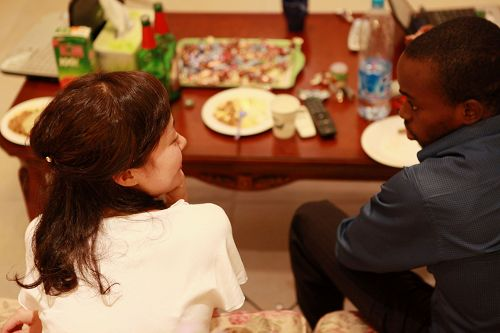
外国女孩进门大方地走一圈与视线接触到或陌生或认识的人打招呼，中国女孩进来大多比较沉默，有三个同时进门的女孩儿居然很惊慌地面壁几秒，为啥？可以理解为“害羞”，也可以理解为缺乏基本的社交礼仪。

尼日利亚男性的民族帽，不同国家帽子不一样。帽子是他们地位财富的象征。看过介绍尼日利亚的照片，有位中年男人头戴帽子，手持拐杖，衣饰华丽，穿得象中国清朝的贵族。尼日利亚官方语言是英语，来中国的尼日利亚人英语都不赖。他们过了16岁便可结婚，农村结婚的平均年龄比较小，城市则不同。有个25岁尼日利亚男孩说：“我们那儿的女孩同时会交往N个BF，看哪个有钱就嫁给哪个。”绝对了吧？世界是圆的，虽然我并不了解他国民情，但相信不同价值观的人都会有。据说有经济来源，工作和车，（请注意，他们没有提到房子是结婚必需品）那么就可以组建自己的家庭了。

非洲女孩儿衣着鲜艳，穿着高跟鞋，戴夸张的耳环饰品，目不暇接，很漂亮，看得出她们是为party准备的着装，中国人在这方面还是挺“自由的”。在我看来无论来自哪里，何种肤色与信仰，不要以对方的背景和标签去判断，接触了解了，对方就是一个独立的“人”，那些背景和标签不重要。与不同人，外地的、外国的乃至于火星人的接触的过程，仿佛就是一场旅行的过程。

DRESS BLOG @ Sep 02, 2010
一条过膝黑色连衣裙，外套白色透明蕾丝状的中袖圆领衫，长度在髋部。挺大方的，让我这个对蕾丝避而远之的人，也有了好感。

今天不宜出门，不咬嘴唇，脸要拖到地上了。
出门很容易跟别人干起仗来。

中年龌龊男 @ Sep 02, 2010
早晨的电梯间，我、好友、头发梳得一丝不苟的中年男。
我俩并排站最后，他挨着我站，眼睛瞅着我的好友，从身体距离到眼神让人感到极不舒服。好友被瞅得睁大眼睛，那男人便开口说了：“你穿这么多不热啊？”
“她热不热和你还有关系啊？”
“对，对，是和我没关系。”
齐藤--现实和虚幻，灵与肉之间错觉的最好的诠释者，可以用画笔表现“出离现象看本质”的当代画家。

DRESS BLOG @ Sep 01, 2010
中午下班回家，在小区里遇到一位女孩儿，当时真想跳下车走到她面前对她说：“我能给你拍张照吗？”我摸着包里的手机和bloggie，暗自思付着。她穿着藏青色碎花收脚裤，中袖天蓝色衬衫塞在裤子里，披着头发，戴着一顶素色的帽子，与照片里的女孩风格相似，但更好看。

N年前DECOSTER棉麻长裙，复古吗？昨天晚上居然梦见这个品牌，价格涨到上万一件，挑啊挑啊，梦止于“迷你宝蓝色小拎包”，醒来后好生奇怪。

无花果的味道。 @ Sep 01, 2010
箱子送给我三颗无花果，她自家种的。对于无花果的认知来源于小时侯吃的无花果干，被制成梅子干果蜜饯类的零食，细丝状，夹着白色粉末，装在咖啡色图案的塑料袋里出售。这是我第一次吃新鲜的无花果，也是第一次看到它原本的摸样，掰开果肉，里面.......象是无数的小细牙，吃起来极其绵软柔滑，微甜。
我小心翼翼地吃了一颗，下午上班带了一颗给我最要好的同事，她也没吃过新鲜的无花果。给她之后我等了半小时，然后打电话过去问：“吃了吗？”
“吃了。”
“怎么样？”
“软软的，没味道。”
“怎么会，有点甜的味道啊。”
“恩，是有点，就一点点，呵呵。”
我好开心啊。

一位摄友的客厅。。。 @ Sep 01, 2010
男人的收藏行为的确令人惊讶，有些只是收藏，有些是使用后的收藏，相对前者，除了占有还有体验。极端的收藏行为是不是属于偏执范畴？病态的毫无止境。但，是人总会生病，病入膏盲的有，大病痊愈的也有。
估计我这辈子也不可能接触到这么多的摄影器材，虽然有些羡慕，但也没觉得缺少什么。

--图片来自围脖